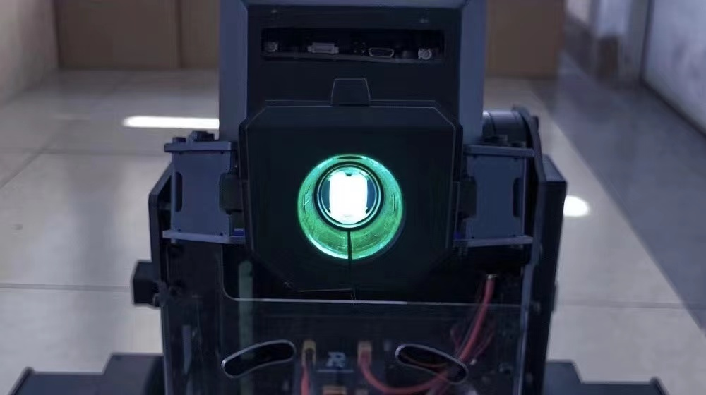

Yitong WangUndergraduate Student, SCUTDepartment of Industrial Equipement and Control Engineering School of Mechanical and Automotive Engineering South China University of Technology Minor:Computer Science Email: ytwangcs [at] gmail [dot] com |
|
Bio
Yitong Wang is an undergraduate student at SCUT. He will get a Bachelor of Engineering at 2022-07. His research interests include Robotics, Computer Vision, and Machine Learning. All in all he has great interests in robotics and other autonomous mobile system, especially how they perceive and understand the world.Wang is a member of RobotLab at South China University of Technology. He is also the Program Leader of Robot Competition Team at Season 2020-2021.
Research Interests
- Robotics (Navigation and Perception)
- Computer Vision (Scene Understanding, Visual reasoning)
- Machine Learning (especially deep reinforcement learning)
Selected Awards / Honors
1st Prize in RoboMaster Championship 2021-083rd Prize in Competition of ICRA2021 ( AI Challenge ) 2021-06
University Scholarship by SCUT 2020-12
Merit Student of SCUT 2020-12
1st Prize in RoboCon Quadruped Robot Simulation Competition 2020-05
2nd Prize in 32th Chinese Physics Olympiad 2017-09
3rd Prize in 31th Chinese Physics Olympiad 2016-09
Projects
|
 |
Dual-Robot Cooperative Adversarial System |

|
ArtisticEye: A Real-time Application for High-resolution Artistic Style Transfer |
Experience
|
National Univeristy of Singapore, Singapore School of Computing Summer Workshop 2022 Cluster:AI & Fintech Theme:TBD Advisor: Tan Tiow Seng, |
|
|
Engine Plant of Dongfeng Commercial Vehicle Co.,Ltd, Wuhan, China Processing Intern, Summer 2021 Mentors: Xizhi Hu |
|
|
Imperial College London, London, UK Student of Master Class "Robotics,AI and iOT", Winter 2021 Mentors: Penny Lo |
|
|
Botai Robot(Foshan, Shunde District) Technology Co.,Ltd, Foshan, China Algorithm Intern, Winter 2021 Collaborator: Situ Manhao |
|


Selected Publications
Temporarily empty~